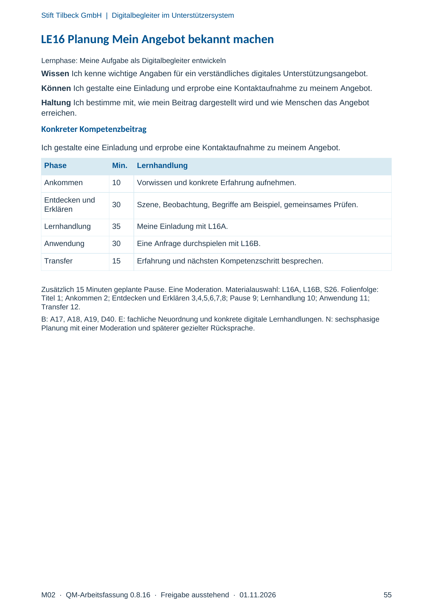
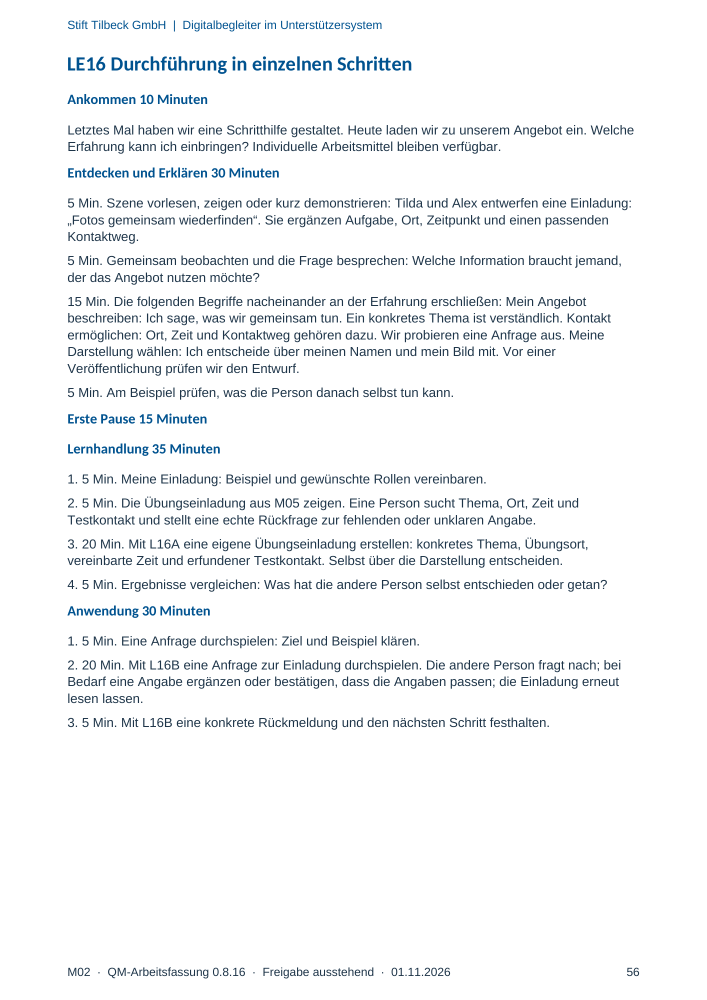
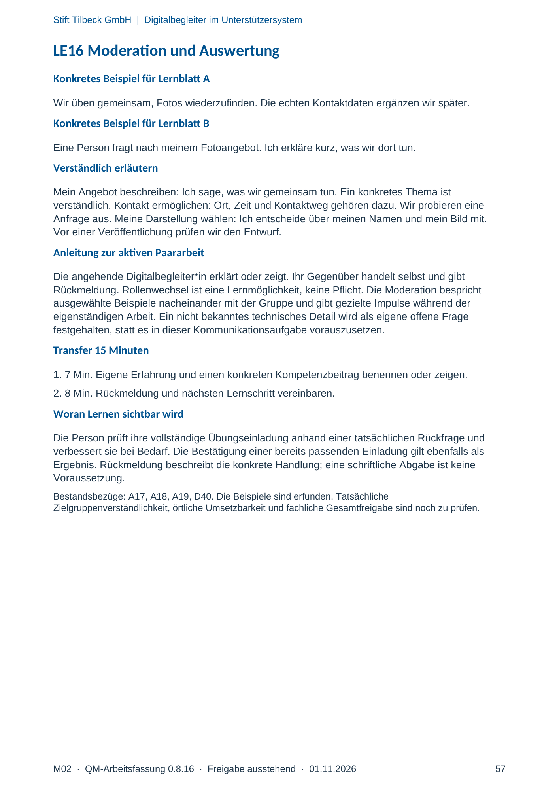

M02 · Originalseite 55, 56, 57
Handbuch und Muster
Gezielte Original-Druckauswahl.
Fragen und Ankreuzfelder werden auf dem Ausdruck bearbeitet. Die Lesefassung speichert keine Antworten.
Lesefassung · Seite 55
Stift Tilbeck GmbH | Digitalbegleiter im Unterstützersystem
M02 · QM-Arbeitsfassung 0.8.16 · Freigabe ausstehend · 01.11.2026 55
LE16 Planung Mein Angebot bekannt machen
Lernphase: Meine Aufgabe als Digitalbegleiter entwickeln
Wissen Ich kenne wichtige Angaben für ein verständliches digitales Unterstützungsangebot.
Können Ich gestalte eine Einladung und erprobe eine Kontaktaufnahme zu meinem Angebot.
Haltung Ich bestimme mit, wie mein Beitrag dargestellt wird und wie Menschen das Angebot
erreichen.
Konkreter Kompetenzbeitrag
Ich gestalte eine Einladung und erprobe eine Kontaktaufnahme zu meinem Angebot.
Phase Min. Lernhandlung
Ankommen 10 Vorwissen und konkrete Erfahrung aufnehmen.
Entdecken und
Erklären 30 Szene, Beobachtung, Begriffe am Beispiel, gemeinsames Prüfen.
Lernhandlung 35 Meine Einladung mit L16A.
Anwendung 30 Eine Anfrage durchspielen mit L16B.
Transfer 15 Erfahrung und nächsten Kompetenzschritt besprechen.
Zusätzlich 15 Minuten geplante Pause. Eine Moderation. Materialauswahl: L16A, L16B, S26. Folienfolge:
Titel 1; Ankommen 2; Entdecken und Erklären 3,4,5,6,7,8; Pause 9; Lernhandlung 10; Anwendung 11;
Transfer 12.
B: A17, A18, A19, D40. E: fachliche Neuordnung und konkrete digitale Lernhandlungen. N: sechsphasige
Planung mit einer Moderation und späterer gezielter Rücksprache.
Originalseite ansehen

Lesefassung · Seite 56
Stift Tilbeck GmbH | Digitalbegleiter im Unterstützersystem
M02 · QM-Arbeitsfassung 0.8.16 · Freigabe ausstehend · 01.11.2026 56
LE16 Durchführung in einzelnen Schritten
Ankommen 10 Minuten
Letztes Mal haben wir eine Schritthilfe gestaltet. Heute laden wir zu unserem Angebot ein. Welche
Erfahrung kann ich einbringen? Individuelle Arbeitsmittel bleiben verfügbar.
Entdecken und Erklären 30 Minuten
5 Min. Szene vorlesen, zeigen oder kurz demonstrieren: Tilda und Alex entwerfen eine Einladung:
„Fotos gemeinsam wiederfinden“. Sie ergänzen Aufgabe, Ort, Zeitpunkt und einen passenden
Kontaktweg.
5 Min. Gemeinsam beobachten und die Frage besprechen: Welche Information braucht jemand,
der das Angebot nutzen möchte?
15 Min. Die folgenden Begriffe nacheinander an der Erfahrung erschließen: Mein Angebot
beschreiben: Ich sage, was wir gemeinsam tun. Ein konkretes Thema ist verständlich. Kontakt
ermöglichen: Ort, Zeit und Kontaktweg gehören dazu. Wir probieren eine Anfrage aus. Meine
Darstellung wählen: Ich entscheide über meinen Namen und mein Bild mit. Vor einer
Veröffentlichung prüfen wir den Entwurf.
5 Min. Am Beispiel prüfen, was die Person danach selbst tun kann.
Erste Pause 15 Minuten
Lernhandlung 35 Minuten
1. 5 Min. Meine Einladung: Beispiel und gewünschte Rollen vereinbaren.
2. 5 Min. Die Übungseinladung aus M05 zeigen. Eine Person sucht Thema, Ort, Zeit und
Testkontakt und stellt eine echte Rückfrage zur fehlenden oder unklaren Angabe.
3. 20 Min. Mit L16A eine eigene Übungseinladung erstellen: konkretes Thema, Übungsort,
vereinbarte Zeit und erfundener Testkontakt. Selbst über die Darstellung entscheiden.
4. 5 Min. Ergebnisse vergleichen: Was hat die andere Person selbst entschieden oder getan?
Anwendung 30 Minuten
1. 5 Min. Eine Anfrage durchspielen: Ziel und Beispiel klären.
2. 20 Min. Mit L16B eine Anfrage zur Einladung durchspielen. Die andere Person fragt nach; bei
Bedarf eine Angabe ergänzen oder bestätigen, dass die Angaben passen; die Einladung erneut
lesen lassen.
3. 5 Min. Mit L16B eine konkrete Rückmeldung und den nächsten Schritt festhalten.
Originalseite ansehen

Lesefassung · Seite 57
Stift Tilbeck GmbH | Digitalbegleiter im Unterstützersystem
M02 · QM-Arbeitsfassung 0.8.16 · Freigabe ausstehend · 01.11.2026 57
LE16 Moderation und Auswertung
Konkretes Beispiel für Lernblatt A
Wir üben gemeinsam, Fotos wiederzufinden. Die echten Kontaktdaten ergänzen wir später.
Konkretes Beispiel für Lernblatt B
Eine Person fragt nach meinem Fotoangebot. Ich erkläre kurz, was wir dort tun.
Verständlich erläutern
Mein Angebot beschreiben: Ich sage, was wir gemeinsam tun. Ein konkretes Thema ist
verständlich. Kontakt ermöglichen: Ort, Zeit und Kontaktweg gehören dazu. Wir probieren eine
Anfrage aus. Meine Darstellung wählen: Ich entscheide über meinen Namen und mein Bild mit.
Vor einer Veröffentlichung prüfen wir den Entwurf.
Anleitung zur aktiven Paararbeit
Die angehende Digitalbegleiter*in erklärt oder zeigt. Ihr Gegenüber handelt selbst und gibt
Rückmeldung. Rollenwechsel ist eine Lernmöglichkeit, keine Pflicht. Die Moderation bespricht
ausgewählte Beispiele nacheinander mit der Gruppe und gibt gezielte Impulse während der
eigenständigen Arbeit. Ein nicht bekanntes technisches Detail wird als eigene offene Frage
festgehalten, statt es in dieser Kommunikationsaufgabe vorauszusetzen.
Transfer 15 Minuten
1. 7 Min. Eigene Erfahrung und einen konkreten Kompetenzbeitrag benennen oder zeigen.
2. 8 Min. Rückmeldung und nächsten Lernschritt vereinbaren.
Woran Lernen sichtbar wird
Die Person prüft ihre vollständige Übungseinladung anhand einer tatsächlichen Rückfrage und
verbessert sie bei Bedarf. Die Bestätigung einer bereits passenden Einladung gilt ebenfalls als
Ergebnis. Rückmeldung beschreibt die konkrete Handlung; eine schriftliche Abgabe ist keine
Voraussetzung.
Bestandsbezüge: A17, A18, A19, D40. Die Beispiele sind erfunden. Tatsächliche
Zielgruppenverständlichkeit, örtliche Umsetzbarkeit und fachliche Gesamtfreigabe sind noch zu prüfen.
Originalseite ansehen
